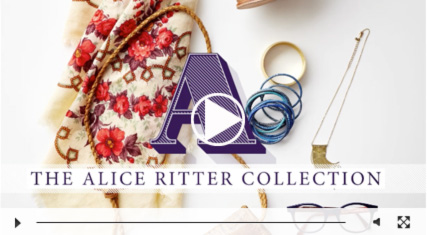

about Alice Ritter
A small-town French girl raised in a nice family with traditional bourgeois values, Alice Ritter grew up playing dress up in her grandparents’ attic with clothes from different eras. While that piqued her interest in fashion early on, the couture in the pages of French fashion Magazines—hooked her for life on design.
Inspired by the unifying design element--the signature plotline threading one season to the next--is the vision. The story she’s telling and the design process that leads her there is “a reflection of my journey, my self-discovery. A big part of my identity—or my dreamed identity—goes into my design.”
in the Studio
